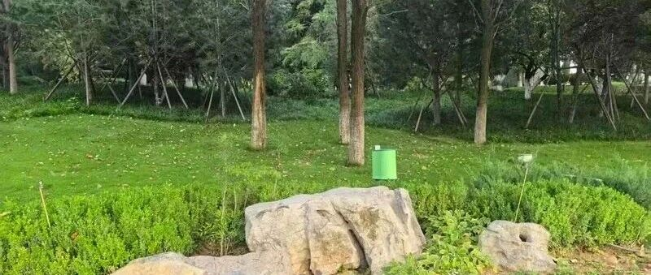
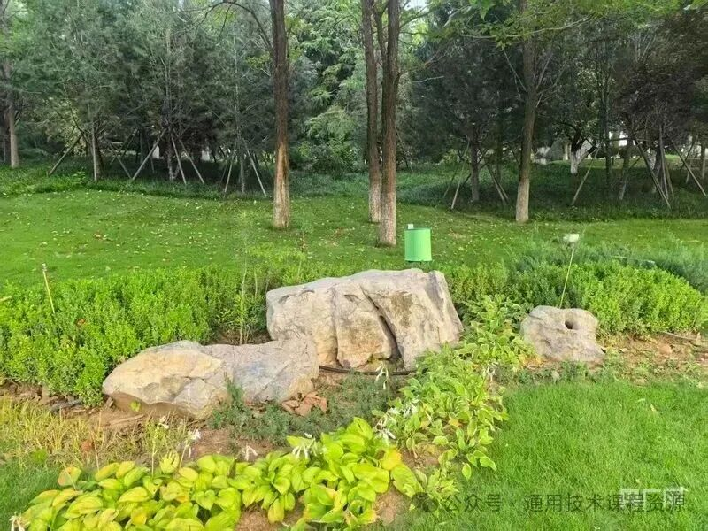
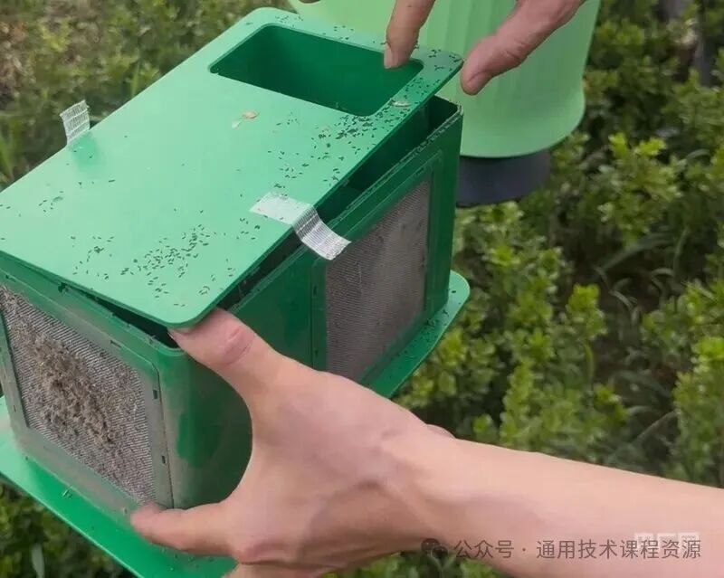

本地离线副本。来源：微信公众号「通用技术课程资源」，作者：山东布衣，2026-08-16 08:28。
原链接：https://mp.weixin.qq.com/s/ej6rmp4sV9Y-JBmA1KM1Hg
本文件供研究核对外观与正文，不替代原页面。

通用技术 · 技术与生活
从“无蚊公园”看技术如何解决问题
逛公园被蚊子咬，是几乎人人都有过的烦恼。而济南的一个公园，竟然做到了“几乎没蚊子”。这背后不是魔法，而是一个遍布公园的“小绿盒”——呼吸式捕蚊机。今天，我们就从通用技术的学科视角，拆解这则新闻里的技术密码。
据《大众日报》报道，济南市高新东区彩虹湖人才科技生态园布设了“呼吸式捕蚊机”，市民在此休闲纳凉、遛娃散步，几乎不被蚊子叮咬。
这些捕蚊机释放微量二氧化碳，模拟人体呼吸，吸引蚊虫主动靠近后迅速吸入灭杀。整个过程纯物理操作，无化学残留。数据显示，该设备对白纹伊蚊的捕杀效果达99.39%。
杭州十字港公园、广州、北京等地也纷纷跟进“无蚊公园”“无蚊害城区”建设，掀起一场科技“灭蚊战”。

通用技术课程告诉我们，技术总是为了满足人的某种需求而产生和发展的。公园里蚊虫叮咬，影响市民休闲体验、传播疾病——这就是一个真实存在的“问题”。
传统的灭蚊方式是喷洒药剂，但它带来新问题：化学残留污染环境，可能危害人体健康，还可能让蚊虫产生抗药性。也就是说，老办法在解决一个问题的同时，又制造了新问题。
技术的目的性，不仅体现在“解决问题”，更体现在用更好的方式解决问题。呼吸式捕蚊机的设计目的很明确：既要有效灭蚊，又要保护人和生态环境。这正是技术不断进化的方向。
新闻说“在这些绿色卫士背后，是一整套智能化灭蚊系统”。注意这个词——系统。在通用技术中，系统是由相互作用的要素组成的、具有特定功能的整体。
“无蚊公园”不是一台机器就能搞定的，它至少包含以下要素：
| 系统要素 | 功能 | 设计考量 |
|---|---|---|
| 诱捕模块 | 释放CO₂模拟人体呼吸 | 模拟精度、覆盖范围 |
| 捕获模块 | 负压气流吸入蚊虫 | 吸力强度、能耗控制 |
| 监测模块 | 蚊虫密度数据采集 | 实时性、数据准确性 |
| 布设策略 | 设备空间分布 | 公园地形、蚊虫习性 |
| 维护管理 | 清理、检修、迭代 | 可持续运营 |
这五个要素相互配合，缺一不可。单台机器再厉害，如果布设位置不对、维护跟不上，整个系统也达不到“无蚊”效果。这就是通用技术强调的系统思维——看问题要看整体，看要素之间的关系。
呼吸式捕蚊机的核心巧思在于：利用蚊虫的生物习性反向设计陷阱。蚊子靠感知二氧化碳来寻找吸血目标，那我就主动释放CO₂“伪装成人”，让蚊子自投罗网。
▼ 呼吸式捕蚊机工作流程
STEP 1 释放微量CO₂ 模拟人体呼吸 → STEP 2 蚊虫误判目标 主动靠近 → STEP 3 负压气流吸入 进入灭杀舱 → STEP 4 物理灭杀 无化学残留
这里涉及通用技术中控制的思想：释放CO₂是“输入”，吸引蚊虫是“被控对象”的行为变化，负压吸入是“执行机构”的动作，而捕杀效果99.39%的数据反馈，则构成了一种闭环监测——根据效果数据调整设备布设和运行策略。
通用技术强调“比较与评估”的思维方法。我们把传统灭蚊与智能捕蚊做个对比：
| 对比维度 | 传统喷药灭蚊 | 智能呼吸式捕蚊 |
|---|---|---|
| 原理 | 化学毒杀 | 物理诱捕 |
| 环境友好 | ✗ 有化学残留 | ✓ 无残留 |
| 人体安全 | ✗ 存在隐患 | ✓ 无危害 |
| 精准性 | ✗ 无差别覆盖 | ✓ 定向诱杀 |
| 智能化 | ✗ 人工操作 | ✓ 数据监测反馈 |
| 可持续性 | ✗ 易产生抗药性 | ✓ 可持续运营 |
可以看到，新技术几乎在每一个维度上都实现了升级。这印证了通用技术中的观点：技术的发展方向是更高效、更安全、更智能、更可持续。
通用技术课程有一个核心议题——人机关系。技术产品不是冰冷的机器，它的终极服务对象是人。
市民的评价最能说明问题：
“经常来公园玩，几乎没感觉到有蚊虫叮咬。”
“几乎没被蚊子咬过。”

这两句朴素的话，背后是技术设计的最高追求：让人感觉不到技术的存在，却能切实享受到技术带来的便利。设备安静地蹲在角落，释放着人感知不到的微量气体，默默把蚊子“安排”了。市民不需要扇扇子、喷花露水，公园体验大幅提升。
这就是良好的人机关系——技术适应人，而不是人迁就技术。
新闻里还提到各地“百花齐放”的灭蚊思路，这正是技术创新多样性的生动体现：
物理捕杀、数据监测、生物防治、政策引导……面对同一个问题，技术给出了多条路径。这说明创新没有唯一解，关键是找到适合具体场景的方案。而不同方案的组合，往往能产生“1+1>2”的效果。
一个“小绿盒”，解决了一个“大烦恼”。从通用技术的视角看，“无蚊公园”的故事告诉我们：技术不是遥不可及的高深概念，它就藏在生活的每个角落。每一次“没蚊子”的惬意体验背后，都是问题发现→方案设计→系统实施→效果反馈的完整技术流程。
学通用技术，不只是学知识，更是学一种用技术思维看世界、用技术方法解问题的能力。
下回逛公园，如果你恰好遇到了这个“小绿盒”，不妨多看它一眼——那是一个微型技术系统，正在安静地运转，守护你的夏天。